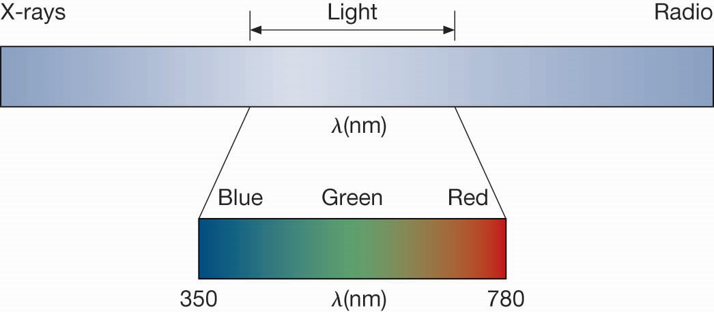
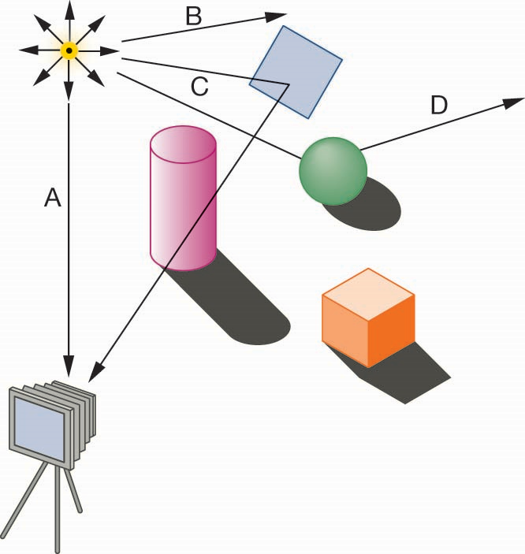
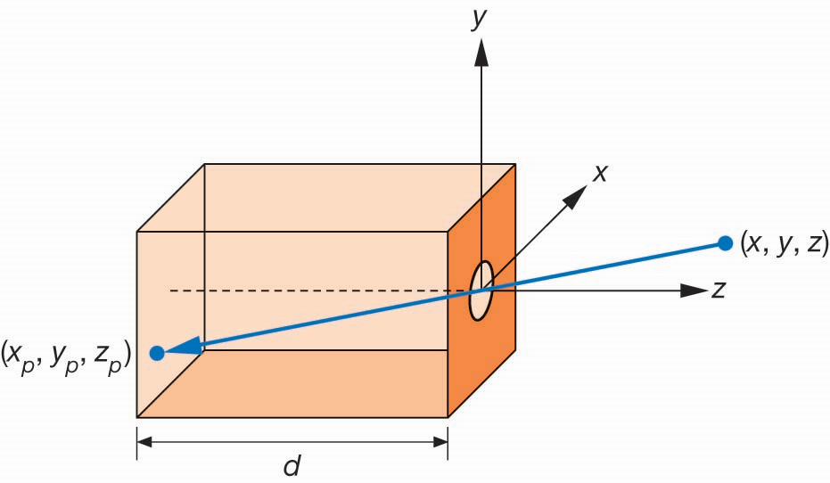
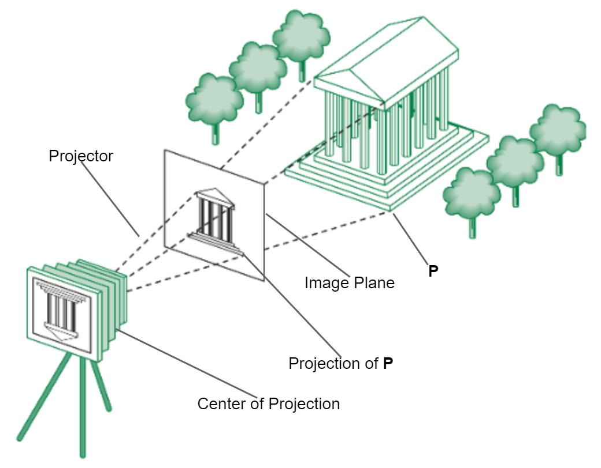
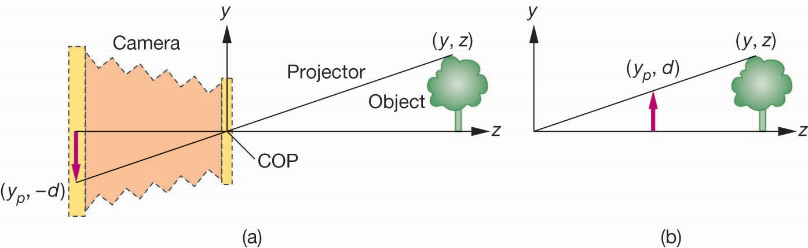
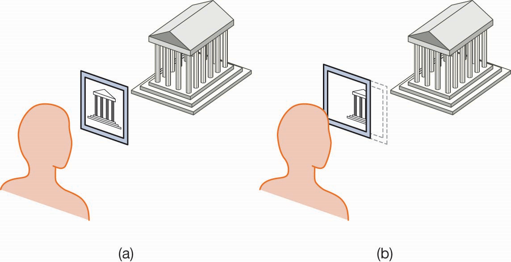
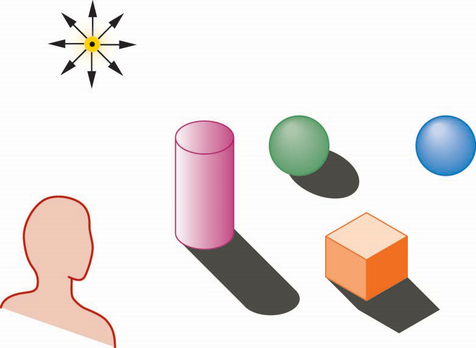

计算机图形学
第一章 图形系统和模型(3)
成像系统
成像系统
什么是成像
在计算机图形学中，在二维平面上成像，采用的过程和方法与现实世界中的成像方法类似，模拟的是如相机、望远镜、显微镜、人类视觉成像系统等的成像系统
成像系统
成像三要素
- 成像对象
- 观察者
- 光
此三种要素决定了光照如何影响场景中的各要素最终的成像效果，且这三种要素之间相互依赖

成像系统
光
光是一种电磁波，我们能够”看见“，是因为视觉系统受到光线的刺激所诱发的一系列过程所致
成像系统
光线追踪和几何光学
从光源开始，沿着光路找到进入相机镜头的光线强度和颜色，确定成像的像素颜色。但因为每条光线都会与多个物体产生交互作用，包括折射、反射、吸收等，计算相对复杂

成像系统
灰度图和彩色图
- 灰度图(Luminance Image)
- 单色图，各像素的值代表颜色的灰度值，类似于黑白电视的效果
- 彩色图(Color Image)
- 彩色图，可明确感受到颜色的明度、饱和度和色调，与人的视觉认知系统紧密联系。但无需表现出所有人类可感知的色彩
成像系统
人类视觉感知

成像系统
人类颜色感知
- 视杆细胞(Rod Cells)
- 分布于视网膜的周围，仅有一种光敏色素，对光线强度比视锥细胞更敏感，主要用于夜视感知，人类视网膜上平均有1亿2500万视杆细胞
- 视锥细胞(Cone Cells)
- 分布于视网膜黄斑区附近，有三种，分别对波长564, 534和420nm的波长敏感，即黄绿色、绿色和蓝紫色，将视觉信号混合即形成人类的颜色感知，人类视网膜上约有600至700万视锥细胞
成像系统
颜色模型
加色系统(RGB) VS 减色系统(CMY)
 |
 |
成像系统
相机模型
小孔成像
$x_p=-x*d/z$, $y_p=-y*d/z$, $z_p=d$
成像系统
合成相机模型
成像系统
合成相机模型的优点
- 对象、观察者、光源位置三者互相独立
- 可将二维图形视作是三维图形在某个方向上的投影
- 有助于简化API的设计，包括物体、相机、光源等的属性设置，通过简单的几何计算就能得到结果图像
- 利于硬件快速高效实现
成像系统
成像
成像系统
窗口裁剪
成像系统
全局光照和局部光照
物体会同时受到全局光照和局部光照的影响。
部分物体会阻挡光通过，形成阴影；
光在通过部分物体时还会发生反射、折射等，使物体会不止受到一个光源的照射影响，也就无法为每个物体独立计算颜色、阴影等光照效果
有些物体是透明的
成像系统
基于物理的方法
- 光线跟踪(Ray Tracing):从光源开始，沿着光路找到进入镜头的光线，形成图像，或者部分光线投射到无穷远处，或被物体吸收
- 辐射度(Radiosity):基于能量的方法，以能量守恒为基础，计算量大，速度更慢，无法实时实现
成像系统
光线跟踪的特点
- 光线跟踪基于物理的计算，更接近真实的光照效果
- 对如多边形构成的简单物体或者简单的点光源，计算简单
- 光线跟踪能够更好地处理全局光照，如各种阴影效果和多重反射
- 光线跟踪的计算量较大，速度较慢，在硬件计算能力有限的条件下，不适用于实时交互应用，但是在利用GPU进行加速计算后，速度已能接近于实时
成像系统
成像过程
应用程序→几何处理→像素处理(光栅化)
- 应用程序，提供图元，即用于描述三维物体的点、线、多边形等信息，及用于表面纹理映射的图案或位图
- 几何处理，是将三维坐标变换为二维屏幕坐标的过程，包括了模型与视点变换，光照计算，投影计算，裁剪，屏幕投射等几个过程的计算
- 光栅化，将屏幕对象先传送到像素处理器进行光栅化，后再对每个像素进行着色，再输出到帧缓冲器中，最后再输出到显示器